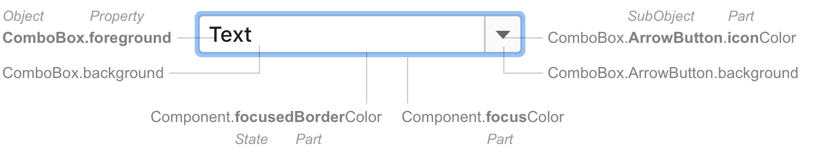

Exposing Theme Metadata
All available UI Customization Keys that can be used in Custom Themes must be defined in a dedicated *.themeMetadata.json file which is registered via com.intellij.themeMetadataProvider extension point.
The following minimal sample demonstrates all details required when exposing UI customization keys of your plugin’s UI.
/resources/META-INF/plugin.xml:
<idea-plugin>
[...]
<extensions defaultExtensionNs="com.intellij">
<themeMetadataProvider path="/META-INF/MyPlugin.themeMetadata.json"/>
</extensions>
[...]
</idea-plugin>
/resources/META-INF/MyPlugin.themeMetadata.json:
{
"name": "My Plugin",
"fixed": false,
"ui": [
{
"key": "MyComponent.border",
"description": "The border for my component. Not used anymore.",
"deprecated": true,
"source": "com.myplugin.MyComponent",
},
{
[more keys...]
}
]
}
Attributes
name- Human-readable name, e.g., plugin namefixed-falseby default,trueif metadata describes external elements, e.g., an UI library-
ui- Root element listing all customization keys:key- Customization key name (see Key Naming Scheme)description- Description to be shown to Theme authors editing*.theme.jsonfilesdeprecated-truewhen key is deprecated, please provide explanation and/or replacement indescriptionif availablesource- FQN of the underlying UI component implementationsince- The release number (e.g.[2019.2]) when this UI customization key was exposed. A release number prior to 2019.2 is valid.
Color keys can be used via JBColor.namedColor() providing defaults for Light and Dark theme:
private static final Color SECTION_HEADER_FOREGROUND =
JBColor.namedColor("Plugins.SectionHeader.foreground", new JBColor(0x787878, 0x999999));
Other keys can be obtained via javax.swing.UIManager#getXXX() methods.
Key Naming Scheme
All keys must follow this Naming Pattern:
Object[.SubObject].[state][Part]Property

Property
| Word | Use for | Example |
|---|---|---|
foreground |
Text color. | Label.foreground |
background |
Background color for objects with text. | Label.background |
<part>Color |
Objects with a single color (do not have foreground/background). Do not use the word “Color” separately, always use with the “part” word. The word “Color” shows that this is a color property. Otherwise, it can be confused with a property of another type. |
Popup.borderColor Group.separatorColor |
State
| Word | Use for | Example |
|---|---|---|
Active |
Enabled components, default state. Omit this word. The default state does not need explicit naming. | Notification.background |
Inactive |
Enabled components that might be perceived as interactive but are actually not. Example: a tree with visible selection but not in focus. Goes after other state words. | Tree.inactiveBackground ToolWindow.HeaderTab.hoverInactiveBackground |
Focused |
The current focused component. | Button.focusedBorderColor |
Selected |
A selected tab or any other control that has equally meaningful selected and inactive states. | ToolWindow.HeaderTab.selectedBackground |
Hover Pressed |
An action as indicated in states. | Link.hoverForeground Link.pressedForeground |
Error Warning Success |
Validation states. See example in the guide article. | ValidationTooltip.errorBackground ValidationTooltip.warningBorderColor |
Disabled |
Unavailable components. | Label.disabledForeground |
Part
A part is an internal element of a component, e.g., an arrow button in a combo box. Create a separate key for a part if its properties differ from the parent object.
If a part is common among several components, use the same name for it. Notable examples of common parts:
| Common parts | Use for | Example |
|---|---|---|
Accelerator Shortcut |
Shortcut foreground. | Menu.acceleratorForeground Editor.shortcutForeground |
Border |
A line around a component. | NavBar.borderColor |
Caret |
The vertical line that denotes typing place. | TextField.caretForeground |
ModifiedItem |
An object that has been modified but not yet saved. Example: change anything in the Settings dialog, the setting group name in the tree becomes blue. |
Tree.modifiedItemForeground |
Focus |
Wide focus border around a component. | Component.focusColor “Component” is a special key that sets common properties for several basic input components. |
Info |
Secondary labels with additional useful information. Usually appear in gray color to the right or below a regular label. | CompletionPopup.infoForeground |
Icon |
An icon that is created with a source code (not an image file). | Table.sortIconColor |
Selection |
The focus place in a component with selectable text. Can be in a typed text or in a list or tree. Goes before other state words (for historical reasons). |
TextField.selectionForeground Tree.selectionInactiveBackground |
Separator |
A horizontal or vertical line inside a component. Can be with a label. | Menu.separatorColor |
Shadow |
A shadow below a component. | Button.shadowColor |
SubObject
Use a subobject when creating keys for one of the following:
- An implementation variation. Usually has a similar set of UI property keys as the parent object. Examples:
- Default button:
Button.Default.background - Tool window notification:
Notification.ToolWindow.errorBackground
- Default button:
- An internal smaller component of a complex component with its own UI and behavior. Examples:
- Tool window tab:
ToolWindow.HeaderTab.inactiveBackground - The hint text at the bottom of a popup:
Popup.Advertiser.background
- Tool window tab:
Gradient Color
If a component has a gradient color, add the words “start” and “end” for the beginning and ending of a gradient. Examples:
Button.startBorderColor/Button.endBorderColorSearchMatch.startBackground/SearchMatch.endBackground
Capitalization
Capitalize Object and SubObject. Use lowerCamelCase for property.
Do not use
| Do not use | Use instead |
|---|---|
Color as a separate word |
<Part>Color |
Outline |
borderColor |
Text |
Foreground |
darcula and other look-and-feel names |
Omit |
Swing legacy
Some color keys are not named according to the rules above. Such keys are inherited from Java Swing and cannot be renamed for compatibility reasons. Do not use naming patterns from the legacy keys.
Examples of Swing keys:
activeCaptionCorrect:WindowsDialogHeader.backgroundButton.disabledTextCorrect:Button.disabledForegroundTableHeader.backgroundCorrect:Table.Header.background
IntelliJ Platform Metadata
Metadata is split up as follows:
IntelliJPlatform.themeMetadata.json- all keys from IntelliJ Platform and custom UI componentsJDK.themeMetadata.json- all keys from Swing components
New keys should be added to IntelliJPlatform.themeMetadata.json only (or corresponding “local” *.themeMetadata.json file of the plugin if applicable).
Please make sure to add a description and use since and deprecated attributes explained in Attributes. Respect Key Naming Scheme and keep alphabetical ordering of keys.